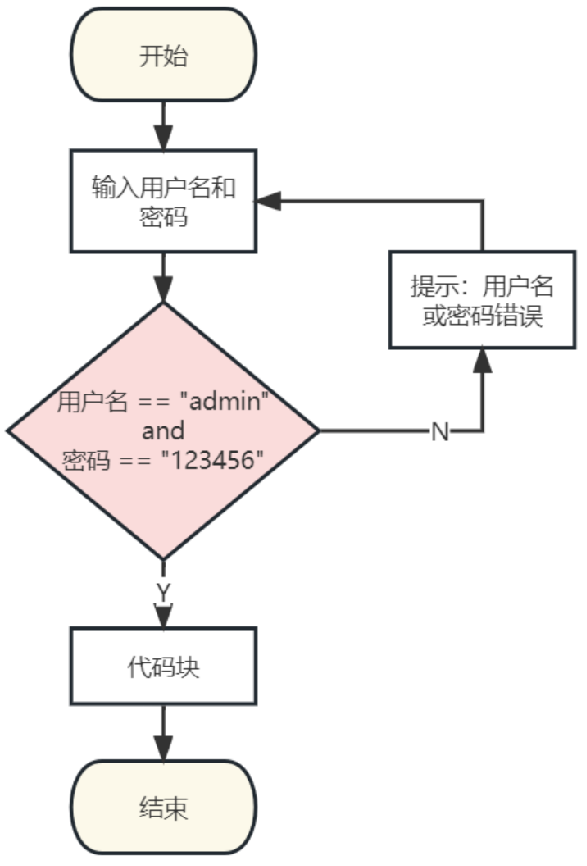

<!DOCTYPE lake>
<ul list="u6adea767"><li data-lake-id="ucf747b9f" fid="ue85f2d93" id="ucf747b9f"><span data-lake-id="u05c337e3" id="u05c337e3">什么是循环</span></li></ul><ul data-lake-indent="1" list="u6adea767"><li data-lake-id="u0e180ba0" fid="ue85f2d93" id="u0e180ba0"><span data-lake-id="ucb161d89" id="ucb161d89">重复执行代码</span></li></ul><ul list="u6adea767" start="2"><li data-lake-id="u89f85f7e" fid="ue85f2d93" id="u89f85f7e"><span data-lake-id="u738c449c" id="u738c449c">为什么需要循环</span></li></ul><p data-lake-id="uc4ca3c57" id="uc4ca3c57" style="text-indent: 2em; text-align: center"></p><ul list="u2834f253"><li data-lake-id="uacafbbf0" fid="uffbb0bb3" id="uacafbbf0" style="text-align: left"><span data-lake-id="uded64c0c" id="uded64c0c">循环的实现方式</span></li></ul><ul data-lake-indent="1" list="u2834f253"><li data-lake-id="u5d34f48e" fid="uffbb0bb3" id="u5d34f48e" style="text-align: left"><span data-lake-id="u9a25a1c2" id="u9a25a1c2">while</span></li><li data-lake-id="u7278a35e" fid="uffbb0bb3" id="u7278a35e" style="text-align: left"><span data-lake-id="u116156eb" id="u116156eb">do...while</span></li><li data-lake-id="uaadb15d5" fid="uffbb0bb3" id="uaadb15d5" style="text-align: left"><span data-lake-id="u16ef13e8" id="u16ef13e8">for</span></li></ul><p data-lake-id="u223fc631" id="u223fc631" style="text-align: left"><span data-lake-id="u8ce400b8" id="u8ce400b8">​</span><br/></p><h1 data-lake-id="xCPvI" id="xCPvI"><span data-lake-id="u3ee78354" id="u3ee78354">while语句</span></h1><p data-lake-id="u44d0af78" id="u44d0af78" style="text-align: center"></p><p data-lake-id="u2b982afb" id="u2b982afb" style="text-align: left"><span data-lake-id="u8967f0c3" id="u8967f0c3">语法格式：</span></p><span class="yuque-card-unsupported">[codeblock]</span><p data-lake-id="u8ee296e0" id="u8ee296e0"><br/></p><p data-lake-id="uef3727ce" id="uef3727ce"><span data-lake-id="ude3afb13" id="ude3afb13">需求：跑步5圈</span></p><p data-lake-id="uf6ecbd5d" id="uf6ecbd5d"><span data-lake-id="uf51ac0d3" id="uf51ac0d3">示例代码：</span></p><span class="yuque-card-unsupported">[codeblock]</span><h1 data-lake-id="zWgu2" id="zWgu2"><span data-lake-id="u8730461f" id="u8730461f">do...while语句</span></h1><p data-lake-id="u23311892" id="u23311892" style="text-align: center"></p><p data-lake-id="uf2c818fb" id="uf2c818fb" style="text-align: left"><span data-lake-id="u1b6bebb0" id="u1b6bebb0">语法格式：</span></p><span class="yuque-card-unsupported">[codeblock]</span><ul list="u0a006938"><li data-lake-id="u8b73927d" fid="uc7c45f07" id="u8b73927d" style="text-align: left"><span data-lake-id="u81815af7" id="u81815af7">do-while 循环语句是在执行循环体之后才检查 条件 表达式的值</span></li><li data-lake-id="ufb1695f3" fid="uc7c45f07" id="ufb1695f3" style="text-align: left"><span data-lake-id="u3e568536" id="u3e568536">所以 do-while 语句的循环体至少执行一次，do…while也被称为直到型循环</span></li></ul><p data-lake-id="u622fedd5" id="u622fedd5" style="text-align: left"><span data-lake-id="u9d67fe54" id="u9d67fe54">​</span><br/></p><p data-lake-id="u12b5a126" id="u12b5a126" style="text-align: left"><span data-lake-id="uc2798a67" id="uc2798a67">需求：跑步5圈</span></p><p data-lake-id="u58f3e654" id="u58f3e654"><span data-lake-id="u9d6c676d" id="u9d6c676d">示例代码：</span></p><span class="yuque-card-unsupported">[codeblock]</span><p data-lake-id="uc81c9f3b" id="uc81c9f3b"><br/></p><h1 data-lake-id="CLO6x" id="CLO6x"><span data-lake-id="ud8e2141c" id="ud8e2141c">for语句</span></h1><p data-lake-id="u229ad361" id="u229ad361"><span data-lake-id="uba261086" id="uba261086">语法格式：</span></p><span class="yuque-card-unsupported">[codeblock]</span><ol list="u01c459b7"><li data-lake-id="u69ee6202" fid="u463b8687" id="u69ee6202"><span data-lake-id="u6a4cc0ff" id="u6a4cc0ff">init会首先被执行，且只会执行一次</span></li><li data-lake-id="ueb06e8e2" fid="u463b8687" id="ueb06e8e2"><span data-lake-id="u5eb53a89" id="u5eb53a89">接下来，会判断 condition，如果条件condition为真</span></li><li data-lake-id="uf594d933" fid="u463b8687" id="uf594d933"><span data-lake-id="u9429a764" id="u9429a764">在执行完 for 循环主体后，控制流会跳回上面的 increment 语句</span></li><li data-lake-id="u6f74dbe1" fid="u463b8687" id="u6f74dbe1"><span data-lake-id="u28c2e03a" id="u28c2e03a">重复执行2-3，直到条件condition为假，结束循环</span></li></ol><p data-lake-id="ue6feafe4" id="ue6feafe4"><span data-lake-id="u97da5a91" id="u97da5a91">​</span><br/></p><p data-lake-id="u882266cd" id="u882266cd" style="text-align: left"><span data-lake-id="ue0996bfc" id="ue0996bfc">需求：跑步5圈</span></p><p data-lake-id="ua498f7a1" id="ua498f7a1"><span data-lake-id="u59cca783" id="u59cca783">​</span><br/></p><p data-lake-id="uc1a91853" id="uc1a91853"><span data-lake-id="ua8a297e1" id="ua8a297e1">示例代码：</span></p><span class="yuque-card-unsupported">[codeblock]</span><p data-lake-id="ubea875e7" id="ubea875e7"><br/></p><h1 data-lake-id="PFz8V" id="PFz8V"><span data-lake-id="u3505afe7" id="u3505afe7">死循环</span></h1><ul list="u4eca0ac3"><li data-lake-id="ue3116683" fid="uf6b97b22" id="ue3116683"><span data-lake-id="u450bb030" id="u450bb030">条件永远为真的循环就是死循环</span></li><li data-lake-id="ue97e0b06" fid="uf6b97b22" id="ue97e0b06"><span data-lake-id="uc8b7a50e" id="uc8b7a50e">示例代码</span></li></ul><span class="yuque-card-unsupported">[codeblock]</span><p data-lake-id="uc936ea58" id="uc936ea58"><br/></p><h1 data-lake-id="ZViFN" id="ZViFN"><span data-lake-id="u22a7c831" id="u22a7c831">循环案例</span></h1><h2 data-lake-id="YLuqG" id="YLuqG"><span data-lake-id="u10c03246" id="u10c03246">累加求和</span></h2><p data-lake-id="ub87ca2c8" id="ub87ca2c8"><strong><span data-lake-id="ub6ec9215" id="ub6ec9215">实现1+2+3……100所有数字的累加</span></strong></p><span class="yuque-card-unsupported">[codeblock]</span><p data-lake-id="u5b524e1a" id="u5b524e1a"><br/></p><h1 data-lake-id="X4cJa" id="X4cJa"><span data-lake-id="u3e741db2" id="u3e741db2">循环嵌套</span></h1><p data-lake-id="uba4516b0" id="uba4516b0"><span data-lake-id="ua0679ed1" id="ua0679ed1">需求如下：</span></p><span class="yuque-card-unsupported">[codeblock]</span><p data-lake-id="u1d94ee21" id="u1d94ee21"><span data-lake-id="uc543e03d" id="uc543e03d">​</span><br/></p><p data-lake-id="u86518f83" id="u86518f83"><span data-lake-id="ud5a72952" id="ud5a72952">示例代码：</span></p><span class="yuque-card-unsupported">[codeblock]</span><p data-lake-id="ub8e7baf3" id="ub8e7baf3"><br/></p><h1 data-lake-id="wwWJg" id="wwWJg"><span data-lake-id="udbc8fb66" id="udbc8fb66">练习</span></h1><ol list="u70f71889"><li data-lake-id="u54b375a4" fid="uf120bf8b" id="u54b375a4"><span data-lake-id="u07ec2bf0" id="u07ec2bf0">求</span><code data-lake-id="u5f60a543" id="u5f60a543"><span data-lake-id="u552f58a0" id="u552f58a0">[5, 20]</span></code><span data-lake-id="ud6e56b9f" id="ud6e56b9f">范围内的所有偶数之和。</span></li><li data-lake-id="ud4d5e310" fid="uf120bf8b" id="ud4d5e310"><span data-lake-id="ud0bd2777" id="ud0bd2777">通过for循环嵌套打印如下内容：</span></li></ol><span class="yuque-card-unsupported">[codeblock]</span>